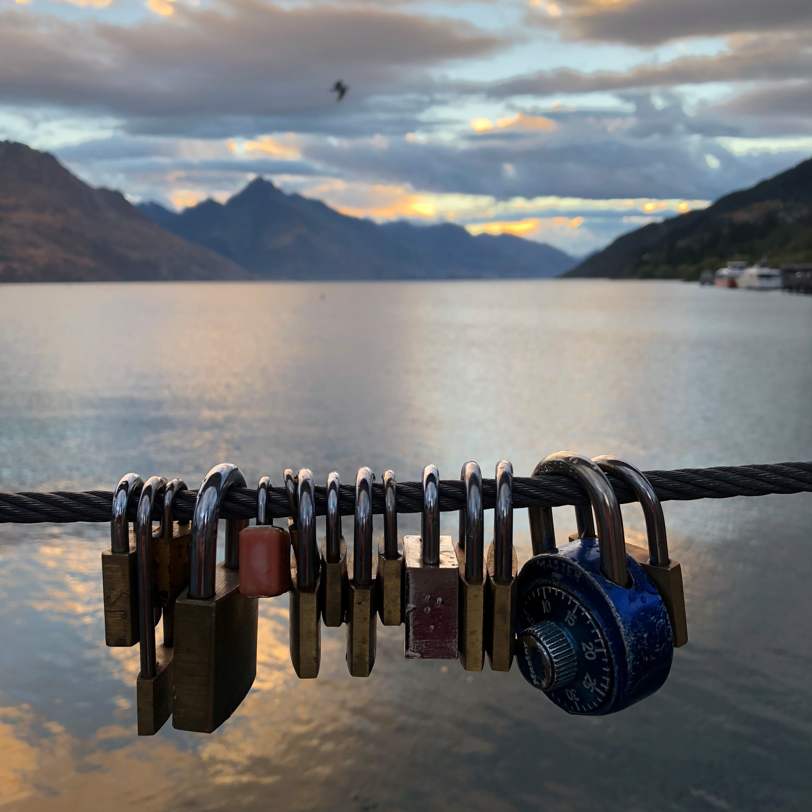
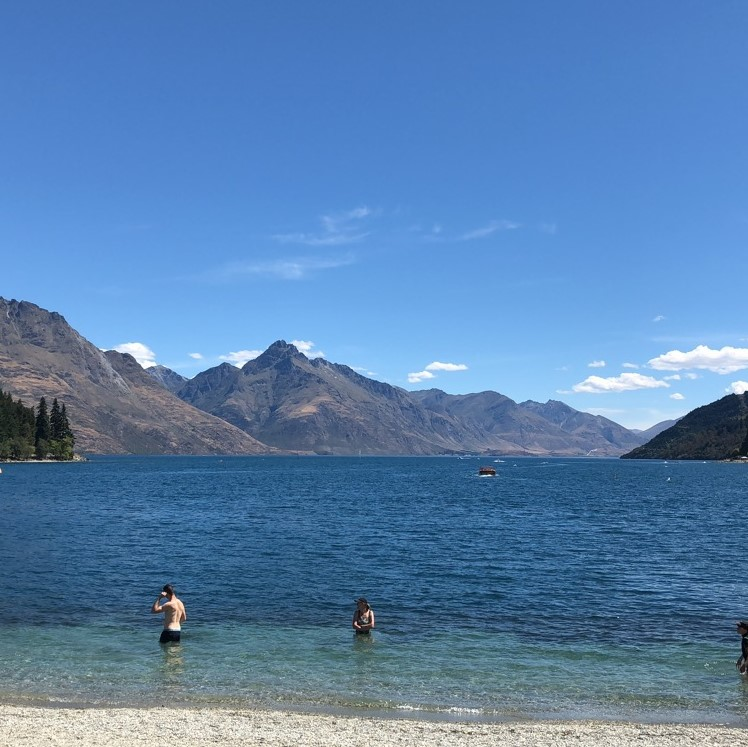
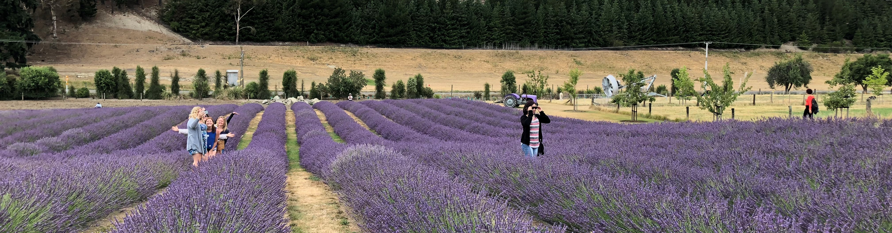
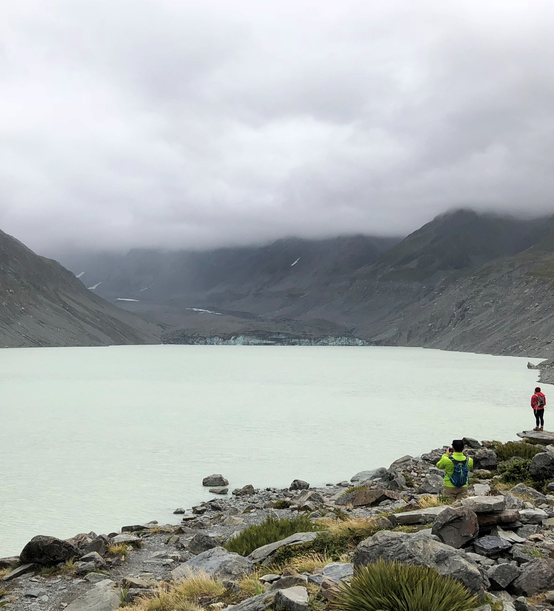
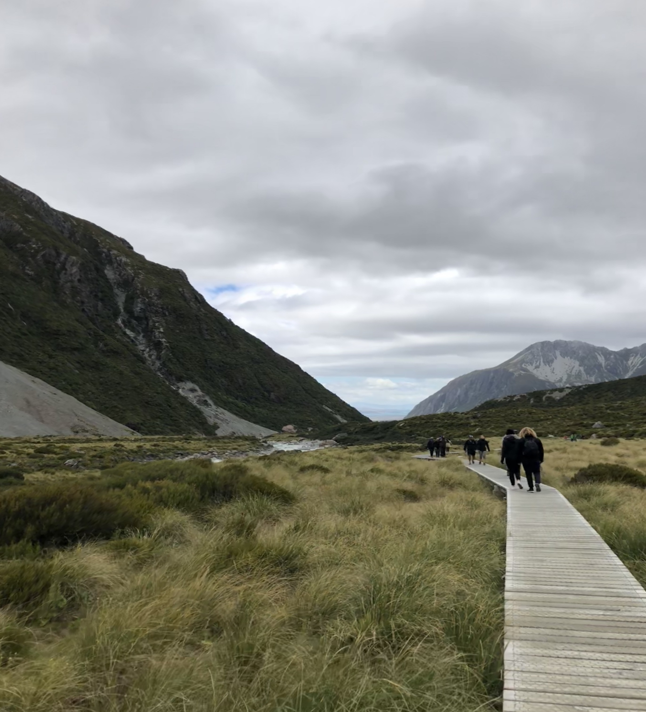

January
Queenstown
~18 years since the last visit. Pretty much the first time again.
2nd of January. Sleepy-eyed but cheery, my family and I set off down to Queenstown. I'd forgotten how much
I missed road trips. We stopped by Lake Tekapo on the way and had lunch at a nearby salmon farm. I saw more
ducks than salmon though to my surprise.
Arriving in Queenstown was really cool. It's completely different from the more quiet mood of Christchurch.
I heard more foreign languages than I heard english. Streets were sprawling with tourists, beaches decked
out with seagulls and sunbathers and most interestingly, a queue that stretched half a street for a single burger shop.
Although the town is bustling it also feels serene - a perfect union of both I feel. I probably spent most of my
time here just staring off into Lake Wakatipu with headphones in. Definitely my favourite part of the trip.


 
Wanaka Lavender Farm
Bees.
How I didn't get stung is beyond me. This lovely farm was my mums favourite part of the trip. I was pretty much her personal photographer here. The farm animals were very chill and the view was refreshing. Our car smelt so much like lavender for the rest of the day. 10/10 would recommend.

Mt. Cook and the Tasman Glacier
Went glacier hunting and saw a tiny iceberg that had broken away from the Tasman glacier. Was a very educational trip
and I even got to touch a piece of the glacier ice! It's sad to think that it will be gone in the next couple of decades.
Mt. Cook itself was a bit of a letdown due to the weather. We walked an hour and a half only to arrive at the
viewing point with the whole mountain shrouded in clouds (bottom left picture).
The food at the Hermitage hotel is excellent. I've had my latest 'best steak ever' from here. However we sadly missed
out on the night sky stargazing on both days. The general scenery from the everywhere on the resort was surreal.
Waking up to giants topped with snow stretching as far as you can see is something else.


 